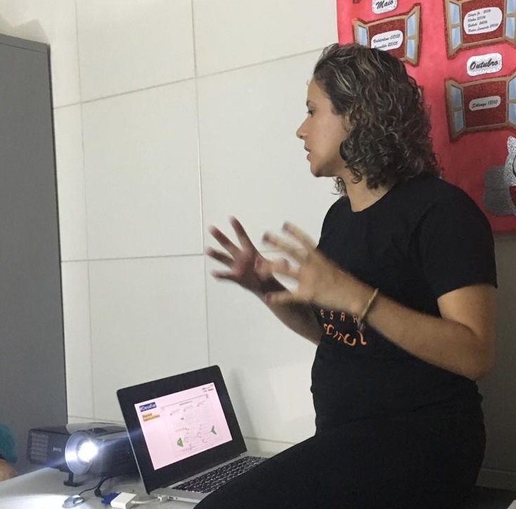
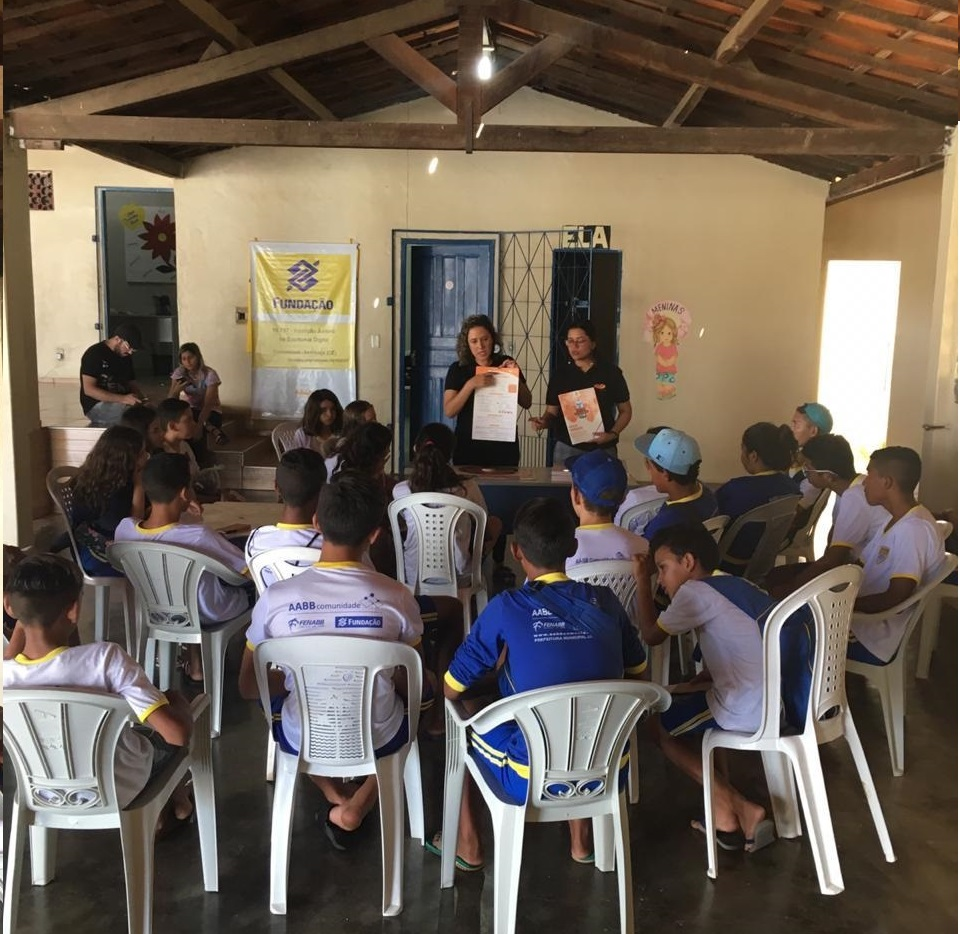

Conheça um pouco da história desta mulher
Nayalla Lima | 24 de Julho de 2020 | Foto: Danielle Gomes
Danielle Nathalia Gomes da Silva nasceu em Recife em 15 de maio de 1985. Ao terminar o ensino médio não tinha noção da carreira profissional que iria seguir. Até que alguém comentou sobre um curso pré-vestibular na UFPE focado na área de exatas. Ela só conseguiu fazer a prova para entrar neste cursinho por que um maestro da igreja lhe ela frequentava cedeu uma passagem de ônibus, que ele usaria para o transporte para seu trabalho.
Seus esforços foram recompensados, ela conseguiu uma vaga neste preparatório. Sua jornada não foi fácil, passava o dia na instituição estudando e muitas vezes, por conta da limitação financeira, só restava um pacote de biscoito recheado para se alimentar. Quando foi realizar a inscrição para o vestibular, descobriu que havia um programa de incentivo (universidade pagava a inscrição do vestibular para cursos de licenciatura). Devido às condições financeiras da família, viu como única alternativa escolher um desses cursos para ingressar no ensino superior.
Com relação a lecionar não seria um empecilho, pois houve um encantamento por esta área após o convívio com seus professores do cursinho. Ficou com um dilema em sua vida: qual curso iria escolher?
Programação chamou sua atenção. Ela não possuía computador em casa, desconhecia como ligar e já que era para aprender, gostaria de estudar sobre este assunto para tomar conhecimento. Achava um curso inovador, revolucionário, futurístico e tecnológico.
Sua trajetória para a construção do conhecimento
Formou-se na terceira turma em licenciatura em Computação na Universidade Federal Rural de Pernambuco em 2008. O curso era tão novo que ainda estava em processo de aprovação do MEC. No início das atividades, percebeu que a maioria da turma já tinha uma noção sobre computador e programação. Entre seus colegas, havia 2 mulheres, incluindo ela. Se deparou com algumas dificuldades, como: falta de didática adequada dos professores, a ausência de explicações e exclusão por parte dos colegas e o próprio questionamento da potencialidade intelectual para atuar em seu curso.
Tentou complementar seus estudos sendo autodidata, obteve sucesso com algumas matérias. Em outras, encontrou barreiras para conseguir um material adequado, gratuito e satisfatório em conteúdo. Houveram outras dificuldades, como a falta de rede de apoio de ensino e de incentivo de mulheres em TI. Também a insegurança social, pois seu curso era noturno e foi assaltada algumas vezes. Os computadores da UFRPE eram precários. Não havia condições financeiras de comprar um computador e ter internet em casa.
Presenciou conflitos familiares onde lidava com a violência doméstica. Vivia com medo e isso atrapalhava seus estudos por provocar uma instabilidade emocional. Esta situação gerou uma motivação, o estudo foi seu escape, sua força motriz para sair de casa e mudar aquela realidade.
Quando iniciou o mestrado em Inteligência Artificial em 2012 na Universidade Federal de Pernambuco, encontrou uma nova realidade. Aprendeu a gostar da parte de pesquisa e do próprio funcionamento da tecnologia para a resolução dos problemas. Aprofundou seus conhecimentos em Redes Neurais e Inteligência Artificial e foi tudo muito inovador. Pela primeira vez em sua vida, havia uma dupla de apoio. Uma pessoa foi facilitadora no entendimento da linguagem Matlab e outra forneceu uma assistência emocional e psicológica.
E nasce uma paixão
Ao concluir o mestrado, foi lecionar o curso de Programação para Jogos Digitais no Programa NAVE, onde atuou por 7 anos, na Escola Técnica Estadual Cícero Dias. Por ser apaixonada por educação e inovação, denomina-se uma facilitadora no aprendizado dos seus alunos. Ministrou a disciplina de introdução a programação de forma prática ensinando conceitos de computador através de brincadeira e dinâmicas. Quando os aprendizes pegavam a essência da lógica de programação era que começavam a utilizar o PC.
Primeiramente ela mostrava a linguagem em blocos, para ir introduzindo aos poucos a disciplina para as crianças. Motivava-se em fazer com que as pessoas gostassem de programação e que não tivessem medo. Empenhou-se em descobrir formas de motivá-los e aplicar as metodologias de ensino de programação. Como resultado disto, seus alunos tiveram um estímulo adequado e demonstravam conhecimento além da professora. Ela reconheceu isto e, algumas vezes, chamava outro aluno para auxiliar na dúvida do colega, compartilhando conhecimento e experiência de um erro semelhante.
Atualmente trabalha no ramo educação social, como Analista Educacional na CESAR School. Ela realiza visitas pelo Brasil em projetos sociais, dando suporte com o intuito de fazer a inserção da tecnologia com jovens que possuem vulnerabilidade social e que não possui nenhuma formação digital.

Devido a sua atividade de trabalho atual, viu a necessidade de realizar uma pós-graduação em gestão ágil de projetos. Ficou encantada quando participou de um workshop só com mulheres, uma verdadeira rede de apoio.
Apaixonada por educação e inovação, está sempre interessada em novas tecnologias, linguagens de programação e práticas inovadoras de ensino. Esta é a inspiradora Danielle Gomes.
E se você está curiosa, dá uma olhadinha no Linkedin dessa deusa inspiradora ♥